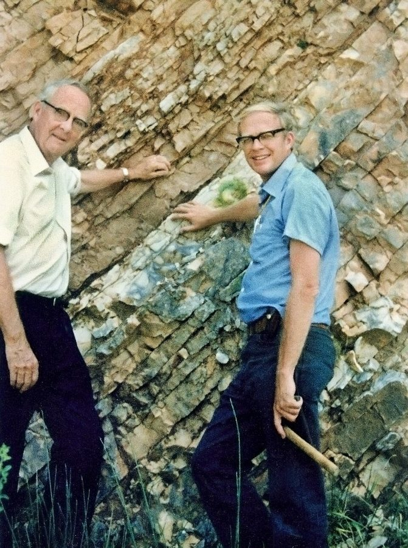
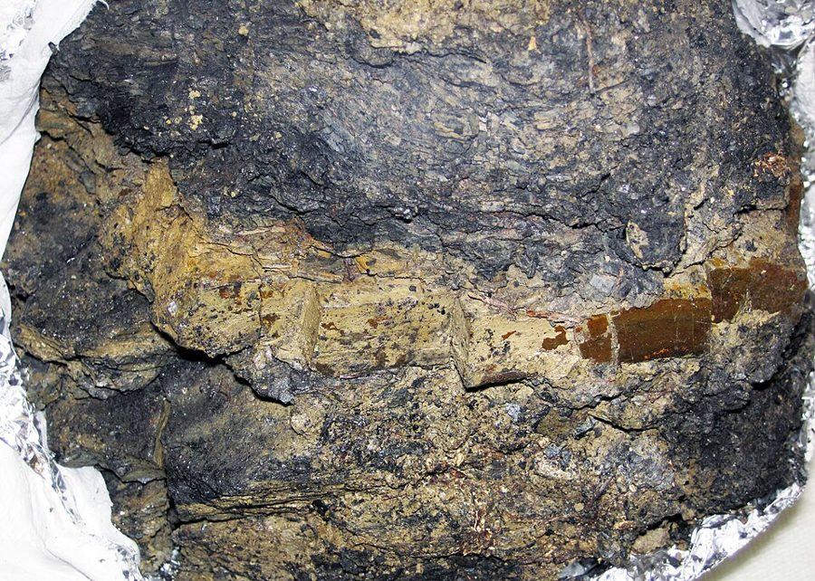
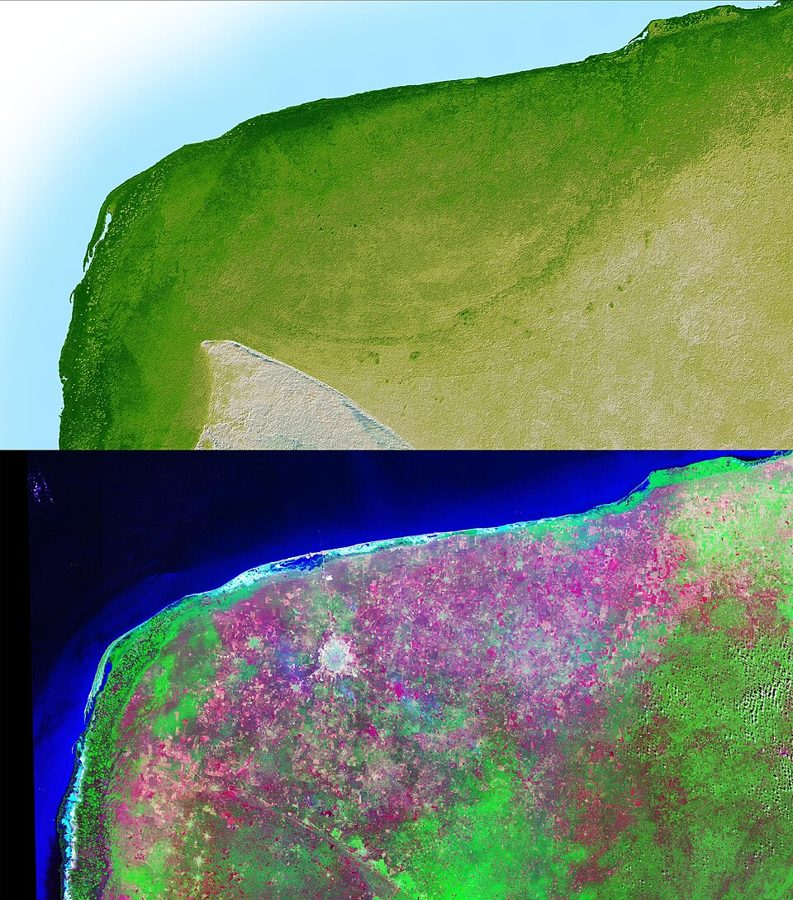
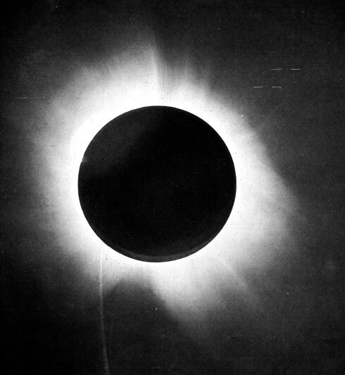

principal investigator
… from the principal investigator to the …
课题负责人
学术圈的行话，常缩写成 PI：一个实验室或一个研究项目的头儿。这里和本科实习生对举，意思是「从老板到最底层的人」。
前几章把实验立成科学的标志。这一章拿两门几乎不做实验、却很少有人怀疑是科学的学问来考这个说法：研究过去的地质学和古生物学，和只能远远观测的天文学。例子是恐龙灭绝的陨石假说，和天体物理凭什么能「近似」做实验。Manzi 想借天文学造出几件后面要反复用的工具。读的时候抓两条线：他拿什么标准判断一门学问的分量，以及他新造的三个词各指什么。

第 4 章最后一段说，科学和别的学问的区别在实验这条连着现实的反馈回路，没有实验的科学只是马虎的哲学。这一章正面接下反例。第 8 段「Remember」指回第 3 章第 52–55 段：科学上的「真」是能做出可靠的预测；第 17 段「As we’ve seen」指第 2 章第 3 段：没有哪个实验能确定控制住了所有别的原因。这一章造的三个条件和三个新词，第 8 章第 21 段、第 9 章第 70–73 段会原样拿出来用。
第 6 段说「撞击可能比恐龙灭绝晚几十万年」还有争议。书里引的那一派当年主张的其实是撞击更早；今天的高精度定年认为两者几乎同时发生。详见「对照今天」。
一门学问做不了实验，凭什么还能可靠？它的可靠取决于什么？
读的时候带着这几个问题。不用先找答案，读完回来对照「检查一下理解」。
这一章短，两节，像一道论证题。开头一段实验室的场景把实验立成科学的标志，第 2 段马上摆出两类反例。§1 先让一步（历史科学用的是标准的科学技术），再用一个「如果」收回来；恐龙和陨石坑是夹在中间的长例子，讲完了第 8 段才回到判断，读的时候别把例子当结论。§2 是全章的重心：天体物理先被归进同一类，接着作者转身，说它有三个特点能近似实验，一个一个讲。讲前两个特点时他顺手造了三个新词，第 15 段的一百万个盒子是专门用来分清它们的思想实验，读两遍。最后一段突然从宇宙跳到社会政策，把三个特点逐条对照，这是通往第二部的桥。
作者落在哪：一门学问不做实验也可能相当可靠，但要靠条件：研究对象之间的相互作用少、能在许多互不相干的地方反复检验、背后的力能在实验里验证。作者说社会政策通常三条都不满足。
这一页是原书第 5 章的两节，粗体是本站给的节名，下面是原书这一节第一段开头的几个词，在 Kindle 里搜它就能跳过去（原书的小标题也在目录里）。每节标了档：「先读」不读就跟不上全书主线，「有空」好看但跳过不丢线。读完打个勾。
先把这一页用到、作者默认你懂的几个概念讲一遍。讲的是概念本身，作者拿它推出什么，读原书时自己看。前面讲过的归纳问题、可控实验、证伪，点进去看。后面三个是作者自己造的词，全书一直用，要分清。
研究「过去发生过什么」的学科：地质学、古生物学，演化生物学里重建历史的那部分。对象已经过去，不能重来一遍，六千多万年前的那次灭绝没法在实验室里再做一次。它们的办法是从今天留下的痕迹（岩层、化石、某种元素的含量）倒推原因，再推出「如果这个解释对，某处应该还能找到什么」，然后去找。哲学家 Carol Cleland 把这种能在几个对立解释之间分出高下的痕迹叫「确凿证据」（smoking gun）。天文学是另一类：研究的现象正在发生，能做预测，但对象太远太大，大多数实验做不了。天文学家常把宇宙里自己发生、恰好能拿来比较的情形叫自然实验，这和经济学里的自然实验（政策恰好只落在一部分人身上）不是一回事。
在这一页：第 2 段把历史科学和天文学分成两类，两处都说的是「大多数」实验做不了；天文意义的自然实验见第 13、17 段。
Manzi 自己起的名字，不是统计学或物理学的通行术语。意思是：一个结果背后有多少原因在同时起作用，它们又缠得多紧。原因少、彼此基本不相干，叫因果密度低；原因多、互相牵动，叫因果密度高。第 12 段他是从「低」这一头下定义的：相互作用的密网要么不存在，要么大多无关紧要。比如算天王星的轨道，只考虑太阳和附近几个天体就够了，宇宙里每一粒尘埃的引力都可以不管。一种药的效果却要看年龄、基因、饮食、别的药……原因列不完。程序员的类比：纯函数的输出只取决于几个参数，因果密度低；一个服务的 bug 牵涉全局状态、配置和网络时序，因果密度高。主流统计里没有这个词，本站觉得最接近的是「效应因人因地而异」（效应异质性）和变量之间的交互作用。
在这一页：第 12 段第一次出现；第 18 段说人类社会的因果密度远超天体物理。第 6–12 章各章都会再用。
也是 Manzi 起的名字，本站译作「整体纠缠」。说的是：研究对象的每一部分都和其余部分实质性地相互作用，没法从中隔出一块，单独当试验单位或观察单位。他在第 14 段把它说成天文学情况的反面：宇宙够大、各处够独立，才能在许多地方反复检验同一条规律。社会里的例子：给一部分求职者做就业辅导，他们找到了工作，可能正好占了没受辅导的人的岗位，对照组也被波及；一项全国性的经济刺激计划，找不出一个「没受影响」的地方当对照。它和因果密度的区别：因果密度问的是原因多不多、缠不缠；整体纠缠问的是单位之间隔不隔得开。主流统计里相近的说法叫「干扰」（interference）：一个单位的结果，受别的单位接没接受处理的影响。
在这一页：第 14 段命名，第 15 段和因果密度分开。第 9 章第 71 段讲自然实验时，作者又拿它说人口在州与州之间流动。
Manzi 给「高因果密度」和「整体纠缠」同时出现起的名字。两样都让可控实验变难，难的地方不同。他用一个思想实验把两者拆开：设想宇宙被一张半透膜的网隔成一百万个盒子，每个盒子里面的力都不随距离减弱，因果密度极高；但力几乎传不出盒子。这时每个盒子里面很难做实验，可在整个宇宙的尺度上并没有整体纠缠，还能拿盒子当单位：对十个盒子施加外力，另外十个不动，比一比。要是膜也通了，高因果密度加上整体纠缠，就是整合的复杂性，作者说可控实验「几乎不可能」。下图是本站画的三种情形。
在这一页：第 15 段命名；第 18 段说许多社会政策问题属于这种情况。第 9 章第 73 段又拿它说一个自然实验靠不住。
按在书里出现的顺序排，标题前是节号。只讲到读懂这一页需要的程度。
1980 年，伯克利的物理学家 Luis Alvarez、他的儿子地质学家 Walter Alvarez，和核化学家 Frank Asaro、Helen Michel 在《科学》上发表论文：白垩纪末的一层薄薄的黏土里，铱的含量比上下的岩层高出许多。铱在地壳里极少，在小行星里多，他们由此推断一颗很大的小行星撞了地球，扬起的尘埃遮住阳光，植物和靠植物活的动物大批死去。书里说团队「由 Luis Alvarez 带领」，没提另外三人。当时通行的年代是 6500 万年前，今天一般写作约 6600 万年前。

撞击假说的软肋是找不到坑。其实 1970 年代末，替墨西哥国家石油公司勘探石油的地球物理学家 Glen Penfield 和 Antonio Camargo 已经在尤卡坦半岛地下发现一个直径约 180 公里的环形构造，1981 年在会上报告过，没多少人注意。1991 年 Alan Hildebrand、Penfield 等人在《地质学》期刊上发表论文，从石油井的岩芯里找到冲击变质的证据，认为它是撞击坑。书里点名的 Kevin Pope 等人用卫星图像发现，地面上有一圈天然井（cenote）正好沿着这个地下环形的边缘排开。

第 9 段举的例子。广义相对论预言，星光从太阳旁边经过时会被它的引力弯折，弯折的角度是按牛顿理论算出的两倍。平时太阳太亮，看不见它旁边的星；1919 年 5 月 29 日日全食，英国天文学家 Dyson 和 Eddington 组织两支观测队，分赴巴西的 Sobral 和非洲西海岸的 Príncipe 岛拍下太阳附近的星空，量出的偏折支持了爱因斯坦。这是「只能观测、做不了实验」的典型检验：没人能把太阳挪来挪去。

1846 年，法国数学家 Le Verrier 根据天王星轨道的偏差，算出一颗未知行星的大致位置，柏林天文台随后在那附近找到了海王星。第 2 章第 28 段讲过这件事。这里第 12 段又拿它来说明因果密度低：算天王星只要考虑太阳和几个近处的天体。第 16 段作者说自己也靠实验验证过的相对论来理解观测数据，指的是第 2 章第 30 段他在 MIT 做的那个「天体看上去比光还快」的研究项目。
第 18 段最后举的两个社会政策。最低工资是法律规定的最低时薪。它会不会让雇主少雇人（尤其是年轻、低技能的人），是经济学争了几十年的老问题：教科书的供求模型说会；1994 年 David Card 和 Alan Krueger 比较新泽西州提高最低工资前后、和邻州宾夕法尼亚快餐店的雇人数，没有发现就业因此减少，引起长期争论。Card 2021 年因劳动经济学的实证研究（包括这一项）得了诺贝尔经济学奖。第 9 章第 13 段作者还会拿最低工资当例子。福利（welfare）在美国多指给低收入家庭的现金援助，第 12 章有一节专讲福利试验。同一段里在几个城市试扫盲项目、另几个城市当对照，书里没说是哪项真实的研究，看上去是作者随手举的例子。
按节排，每节前面是分节地图里的节名。标着「每个字都认识」的，是熟词生义、习语和反话，最容易读错。灰色的那几个字是原句里的位置，在 Kindle 里搜它就能找到。
…then these rules are what is either scientifically true or not. Everything else is scaffolding.— §1 第 8 段。本站译：……那么，科学上称得上真或不真的，就是这些规则。其余的都是脚手架。
这是下判断的口气，斩钉截铁。关键词是 scaffolding：脚手架盖楼时不可少，楼盖好就拆，作者不是说历史科学没用，是说它的价值在帮着造出别的东西。最容易被误读成两样：一是「作者看不起地质学」，二是「作者是工具主义者」。前一句话前面有个条件，第 4 段说的是「如果科学的目的是建立预测规则」；第 4 段末他还补了一句，这种帮助可能很间接、很慢。至于工具主义，他在第 3 章第 52 段明说过自己不这么主张。
High causal density makes controlled experimentation hard, as does holistic integration, each for different reasons.— §2 第 15 段。本站译：高因果密度让可控实验变难，整体纠缠也是，各有各的原因。
这句平平的，却是全章最该记住的一句。each for different reasons 是关键：两个新词不是同义反复。注意形容词的分寸：单独一样是 hard（难），两样合在一起才是 all but impossible（几乎不可能）。往后读到作者说某件事「有整合的复杂性」时，他是在说「两样都有」，不是泛泛地说「很复杂」。
读完这一页的几节再看。下面是作者在这几节里的论点，由本站按论点重新组织，不按原书的顺序；每条下面是依据所在的段落，拿不准就回书里那几段再读一遍。
作者承认地质学这类历史科学用的是标准的科学技术，在这个意义上完全是科学。但如果科学的目的是建立预测规则，它就只在帮着建规则的程度上算数，其余是脚手架。他也补了一句：这种帮助可能很间接、很慢，仔细看也未必看得出来。
§1 第 3–4、8 段撞击假说推出一个当时没人见过的后果：一定有个巨大的坑。后来在墨西哥找到了大小、年代都对得上的坑。作者说这是一次成功的证伪检验，只是不是可控实验；他也照实写了年代上还有争议。
§1 第 5–7 段物体相距极远，绝大多数相互作用可以忽略（因果密度低）；宇宙极大，同一条规则能在许多实际上互相独立、事先没细看过的地方反复检验；支配它的力至少部分能在地球上做实验，再外推出去。作者说，要是没有这些条件，天文学的确定性大概只会更差。
§2 第 11–13、16–17 段因果密度高，是原因又多又缠在一起；整体纠缠，是各部分都实质性地相互作用、隔不出一块当单位。一百万个盒子的设想说明：只有前者时，还能拿隔开的盒子做试验和对照；两样同时存在，就是整合的复杂性，可控实验几乎不可能。
§2 第 12、14–15 段人类社会的因果密度远超天体物理；有时能为某些社会项目找到大体隔开的「盒子」做试验，但许多政策问题有整合的复杂性；物理、化学、生物的实验结论也解释不了最低工资或福利政策的效果。作者说这些留到书的后面再讲。
§2 第 18 段合起来：这一章给全书造了一把尺子：一门学问不做实验能有多可靠，要看因果密度高不高、能不能找到隔开的单位反复检验、能不能连到实验验证过的规律。第二部会拿这把尺子去量经济学和社会政策。
这本书 2012 年出版。下面挑出这一页里能被后来的研究检验的说法，分「书里 / 当时 / 今天」三栏，并给一个结论。结论判的是标题里「书里的说法：」后面那一句。全书的这一节汇总在对照今天。
读完作者的论点，再看它站不站得住。每一块摆出三样：主流怎么看，作者怎么看，本站的评论。最后一句是本站对这一页的总体判断。
主流看法：科学哲学里，Carol Cleland 2002 年在《科学哲学》期刊上论证，历史科学有自己的一套证据推理：先提出几个对立的解释，再去找能在它们之间分出高下的痕迹，并不比实验科学低一等。地质学家和演化生物学家一般也把「弄清过去发生了什么」本身当作科学的目标。
作者的看法：历史科学在用了标准技术的意义上完全是科学；但如果科学的目的是建立预测规则，它只是帮着建规则的辅助，其余都是脚手架（第 3–4、8 段）。
本站的评论：先看清这是条件句。作者没说研究过去没价值，他说的是：拿「能不能指导干预」这把尺子量，它排在后面。这把尺子是全书的需要（他要谈的是政策），不是科学界的共识。而且他自己的陨石坑例子恰好说明，研究过去也能做出「去某处会找到某物」的具体预言并接受检验。把「脚手架」当作者为这本书定的标准来读，别当成对地质学的定论。
主流看法：统计学和经济学里没有这两个词，但有相近的。效应因人因地而异，叫效应异质性；一个单位的结果受别的单位接受处理的影响，叫干扰，Cox 1958 年就把「没有干扰」列为分析试验的前提，Rubin 1980 年把它写进 SUTVA（稳定单位处理值假设）。对付干扰，今天常用的正是「换更大的单位」：Egger 等人 2022 年在《计量经济学》上发表的肯尼亚试验，按村随机给穷户发现金，测出了对没拿到钱的人和商家的外溢效应。
作者的看法：两者「相似但不相同」，各以不同的方式让实验变难；同时存在就是整合的复杂性（第 12、14–15 段）。
本站的评论：当直觉很好用，把两种难拆开，是这一章最清楚的地方。弱点是量不出来：作者没说怎样判断一件事的因果密度有多高，这样的词很容易事后拿来解释任何失败。上面那张对照（异质性、干扰）是本站加的，不是作者的，它们的好处是能算、能检验。盒子的设想就是今天整群随机的思路，说明整体纠缠常常能靠换大单位部分化解，作者第 18 段的扫盲项目例子也承认这一点。
本站的总体看法：这一章短，却是全书的工具间：三个特点和三个新词后面一再用到。论证清楚，限定词也在（大多数、通常、有时）。要打折扣的有三处：「脚手架」是为全书立的标准，不是科学界的共识；新词好用但量不出来；陨石年代的争议，书里把方向写反了，今天也基本有了答案。
先在心里答，再点开。答错的那题，回书里把对应那一节再读一遍。
不矛盾。前一句指它用了标准的科学技术；后一句加了条件：如果科学的目的是建立预测规则，它只在帮着建规则的意义上算数。两句用的是两把尺子。
假说推出了一个当时没观测到的后果：一定有个巨大的、年代对得上的坑。坑要是始终找不到，假说就站不住；后来真找到了，假说经受住了检验。它冒了被推翻的险，只是没有对照组。
物体相距极远，大多数相互作用可以忽略；宇宙极大，能在许多实际上独立的地方反复检验同一条规则；支配它的力至少部分能在地球上做实验，再外推。
主要是整体纠缠：单位之间隔不开，对照店的顾客被吸走，两组差距被夸大。办法是换更大、彼此隔得开的单位，比如按城市分组。第 11 章第 49 段作者说测电视广告要按都市区分组，是同一个道理。
盒子里的高因果密度还在，又添上了整体纠缠，成了整合的复杂性：再也不能拿一些盒子当另一些的对照，作者说可控实验几乎不可能。
不能。作者说有时能为某些社会项目找到大体隔开的「盒子」，比如在几个城市试扫盲项目、另几个城市当对照；他说的是许多政策问题有整合的复杂性，不是全部。
想一想：你维护过的系统里，有没有这样两种改动：一种在测试环境里改个参数、前后一比就知道效果；另一种改了一处牵动全局，根本没法单独测？后一种的难处，更像因果密度高，还是整体纠缠？
读过又忘了，从这里想起来。挑的是这一页最值得记住的故事、人和说法，不按原书顺序；每条后面是节号，想细看就回书里那一节。全书各页的这一节都收在全书回顾。
一句话：一门学问不做实验也能可靠，前提是原因稀疏、单位隔得开、背后的力在实验里验证过；作者说社会政策通常三条都缺。
宇宙被半透膜隔成一百万个盒子，盒里乱成一团、盒间互不相干，还能拿盒子做试验和对照。膜一打通，就成了「整合的复杂性」。
§2Alvarez 团队在白垩纪末的地层里发现铱异常，推断小行星撞了地球；预言中的大坑后来在墨西哥找到。作者说这是一次不靠可控实验的漂亮证伪。
§1如果科学是为了造预测规则，研究过去就只是帮着造规则的脚手架。这是作者为全书立的尺子，前面带着一个「如果」。
§1相距远、能在许多地方反复检验、力能在地球上验证。天文学不做实验也可靠，靠的是这三样；作者说社会政策通常三样都没有。
§2有人拿着实验结果走进实验室，全屋人只想一个词：Well? 作者用这个场景开头：实验是科学的标志。那不做实验的学科算什么？
§1